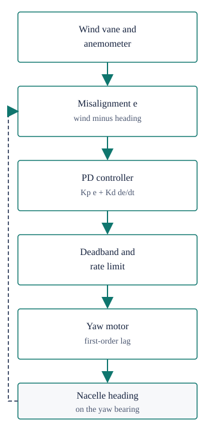

About
This project demonstrates how a wind turbine nacelle can follow a changing wind direction. The simulation shows the yaw controller, the nacelle motion, and the resulting power output.
The work was done by UVCE Bengaluru, Mechanical Engineering, for a jury demonstration.
Architecture
A wind turbine produces the most power when its rotor faces the wind. The nacelle, the housing on top of the tower, turns on a yaw bearing to keep the rotor aligned as the wind changes. This project models that control loop and runs it in the browser.
The control loop

- Wind sensors on the nacelle roof measure the wind direction and speed.
- The controller calculates misalignment, which is the wind direction minus the nacelle heading.
- A PD controller computes the yaw rate command from the misalignment and how quickly it is changing, using the proportional gain Kp and derivative gain Kd.
- A deadband sets the command to zero when the misalignment is small, so the motor does not make tiny corrections.
- A rate limit caps the command at the maximum speed of the yaw motor.
- The yaw motor turns the nacelle on the yaw bearing, with a short response lag.
- The new nacelle heading feeds back into step 2, closing the loop.
Power and alignment
Power output is calculated as the cosine squared of the misalignment. A turbine 10 degrees off the wind keeps about 97 percent of its output, and one 45 degrees off keeps half.
Drivetrain
The rotor turns a vertical transmission shaft down the tower to a bottom hub. A gearbox with a ratio of 50 to 1 drives the generator on the ground, so generator speed is 50 times rotor speed. The ground cabinet holds the generator and controller in this model.
States
- IDLE:
- the simulation is not running.
- MONITORING:
- the misalignment is under 5 degrees.
- TURNING:
- the misalignment is over 5 degrees and the nacelle is moving.
- ALIGNED:
- the misalignment has stayed under 5 degrees for at least 3 seconds.
- FAULT:
- the misalignment has stayed over 45 degrees for more than 10 seconds after the first alignment.
Measured results
Ten runs of the Stable preset from the same starting point gave a median settling time of 27.6 seconds, with a range of 19.7 to 38.5 seconds. The median mean error after settling was 2.2 degrees, and the median steady power was 99.8 percent. The wind model is random, so results vary between runs.
Limits of the model
- Rotor speed scales linearly with wind speed. Real turbines limit rotor speed at high wind.
- Wind changes are random, so settling time varies between runs.
- The vertical transmission shaft is a simplified design. Real turbines use a horizontal main shaft inside the nacelle.
- Power and sensor wiring to the rotating nacelle would need a slip ring or a wireless link. The model does not simulate this.